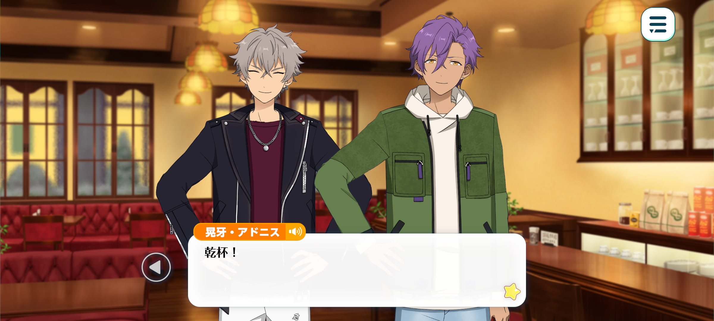
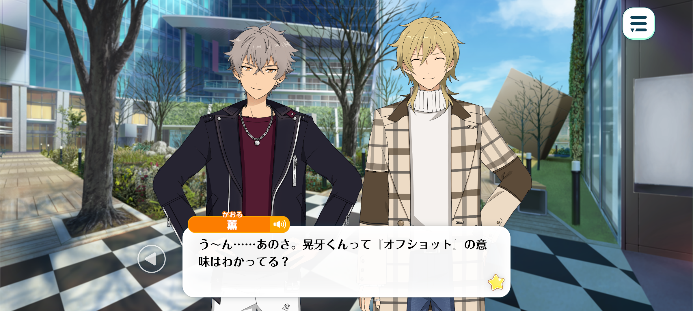

Howling to the Shooting Star | Chapter 1
Idol Story (FS2)


Season: Winter

Kaoru: Everyone got a glass? Well then, here's to all your hard work this year. And to another year of working together—
Cheers!
Koga: Cheers!
Adonis: Cheers!
Rei: Hmm... I never imagined we'd be able to celebrate the New Year together like this. I must thank Kaoru-kun for going to the trouble of organising it.
Adonis: Yes. If Hakaze-senpai hadn't arranged this, I don't think we would have celebrated the New Year together.
Koga: Oioi, that's a bit of an exaggeration, Adonis.
We live in the same building, y'know? We would've bumped into each other sooner or later. And we definitely would've wished each other a happy New Year and all that.
Kaoru: You think so? We've all been pretty busy lately. I don't think I've seen any of you in... what, at least three days?
Rei: When one wishes to see another in private, one is free to do so whenever the mood strikes. But gatherings of this sort require a little forethought and planning.
Adonis: So yes, I'm grateful to Hakaze-senpai for inviting us.
Kaoru: You guys really do exaggerate. I just wanted to show my appreciation for all the hard work you've put in.
Rei: Umu. I share that sentiment wholeheartedly. This past year has been quite the tumultuous one...
Ever since ES was established, I've scarcely had a moment to catch my breath.
Adonis: I agree. The SS has only just finished, and I haven't had a chance to properly relax until now, on New Year's Eve.
There was so much other work to take care of, too. It feels like I've been working non-stop.
Kaoru: That's why we've got to make the most of the holidays and give ourselves a little break.
Koga: Hmph... Easy for you guys to say. I don't even get a minute to myself.
Adonis: Oh? What sort of work have you got on, Oogami?
Koga: Actually, before I came here, Anzu was tellin' me about my Feature Live.
We're gonna be takin' some candid shots for my pamphlet pretty soon.
Kaoru: Ooh~! Sounds exciting. That means you'll be alone with Anzu-chan, huh?
Koga: Haa?! Well, yeah, obviously. Why's that the first thing you think about?
It's gonna be just the two of us, sure, but it's only a photoshoot. I don't care if other people show up.
Kaoru: (Oh? In that case, maybe I could tag along if I have the time. Watching how they go about photographing Koga-kun might come in handy for me, too...)
Rei: Wanko is already terribly busy, and so early in the New Year, too. I'm afraid I'm in much the same predicament. I have work to attend to tomorrow myself.
Adonis: I don't have any work scheduled, but I do have other plans starting tomorrow.
I'm glad we decided to celebrate today. If you'd invited me tomorrow, I'm afraid I would've had to turn you down.
Kaoru: Everyone's surprisingly busy, huh? And the year's only just begun!
Koga: What, you're all busy? Tch... I was gonna ask if any of you could give me a hand.
Adonis: If you're really in a bind, just let us know. I might be able to rearrange my schedule a little, but...
Koga: Nah, it's cool. You guys should take care of your own stuff first. Besides, it's only a few photos.
I ain't got a clue how yer supposed to take candid shots, though. Kinda wish I had someone I could practise with.
Kaoru: ...I don't have anything on at the moment?
Koga: Yeah? Come help me out then, Hakaze-senpai...♪
You're gonna take some seriously cool photos of me!
Kaoru: Well, I suppose I can't say no. When my cute little kouhai asks so nicely, how could I possibly refuse? ♪
Time: Practice shoot day
Location: In a corner of the Hanging Garden

Koga: —How was that? Pretty good one, right~?
Kaoru: Uh, well... Hey, Koga-kun. You do know what a candid means, right?
Koga: Haaah? What d'ya mean? Ain't it supposed to look natural and relaxed?
Kaoru: Exactly. So, let me show you the picture I just took. What do you think?
Koga: Yo! It's got a pretty cool rock vibe to it! ♪
Kaoru: Yeah, no. We're not using that one.
Koga: Hah?! What's wrong with it?! That's a perfectly good photo!
Kaoru: No, no, it's a nice photo, but... these are supposed to be candid shots. You've gotta be a little more natural about it.
You're so conscious of the camera that I can hardly call this candid.
Koga: You say that, but if someone pointed a camera at you, you'd strike a pose too, wouldn't ya?
Kaoru: Well, I suppose that's true. But you're too aware of it.
You're looking straight into the camera and posing in practically every shot. That's hardly going to give us a natural-looking photo.
Koga: ...Gyaaaah! You're makin' this way too damn difficult, Hakaze-senpai!
I don't want anyone seein' me making some stupid face in the first place!
Kaoru: But candid photos aren't supposed to be silly, y'know?
Koga: I get that, but when someone's pointing a camera at me, it's only natural to pose!
Kaoru: That's a wonderful instinct to have as an idol~.
...Oh, but this one's actually pretty good. It really brings out your cute side.
Koga: Haa? Cute side? I’ve got a cute side?
Kaoru: Mhm. Look, this one. You caught in the middle of a sneeze.
Koga: Huh…!?
Kaoru: You've got a surprisingly cute sneeze, you know? People love this sort of thing. It's so Wan-chan core~. ♪
Koga: You bastard! Quit messin' with me! I'm not a dog! Delete that shitty photo, right now!
Kaoru: Okay, okay~. And... there, all gone.
Well then, let's keep going. At this rate, we're never going to get any decent photos.
Koga: Make sure you get some cooler ones this time. Don't screw it up!
Kaoru: (Sigh... This is going to be a long day.)